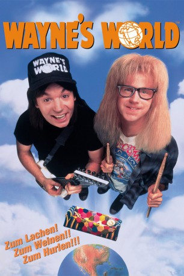
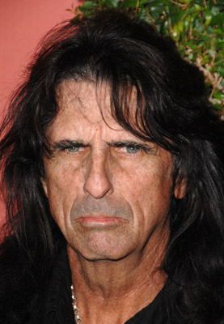

#2806 Wayne's World
 
 IMDB-Wertung: 7.0 / 10
IMDB-Wertung: 7.0 / 10  Metascore: 57
Metascore: 57 
Wayne und Garth haben im örtlichen offenen TV-Kanal ihre eigene Fernsehsendung. Ein schmieriger Produzent erkennt das kultige Potential der Show und engagiert die beiden Chaoten für eine professionelle Sendung, die von einem grossen Videospiele-Hersteller gesponsort werden soll.
Jahr: 1992
Dauer: 94 Minuten
FSK: 12
Land: USA Studio: Paramount PicturesTonspuren: DD2.0 - ,
Untertitel: Englisch,
Auflösung: 1080p (1920x1080) Größe: 8396 MB
Genre: Musik, Komödie
Regisseur:  Penelope Spheeris
Penelope Spheeris
Drehbuch: Mike Myers, Mike Myers, Bonnie Turner, Terry Turner
Soundtrack: J. Peter Robinson
Darsteller:
 Mike Myers als Wayne Campbell
Mike Myers als Wayne Campbell Dana Carvey als Garth Algar
Dana Carvey als Garth Algar Rob Lowe als Benjamin Oliver
Rob Lowe als Benjamin Oliver Tia Carrere als Cassandra
Tia Carrere als Cassandra Brian Doyle-Murray als Noah Vanderhoff
Brian Doyle-Murray als Noah Vanderhoff Lara Flynn Boyle als Stacy
Lara Flynn Boyle als Stacy- Michael DeLuise als Alan
 Lee Tergesen als Terry
Lee Tergesen als Terry Kurt Fuller als Russell Finley
Kurt Fuller als Russell Finley Sean Sullivan als Phil
Sean Sullivan als Phil Colleen Camp als Mrs. Vanderhoff
Colleen Camp als Mrs. Vanderhoff- Donna Dixon als Dreamwoman
 Mike Hagerty als Davy
Mike Hagerty als Davy- Chris Farley als Security Guard
 Meat Loaf als Tiny
Meat Loaf als Tiny Charles Noland als Ron Paxton
Charles Noland als Ron Paxton Robert Patrick als Bad Cop
Robert Patrick als Bad Cop- Ione Skye als Elyse
- Harris Shore als Detective
- Robin Ruzan als Waitress
-  Alice Cooper als Alice Cooper
 Ed O'Neill als Glen, Mikita's Manager
Ed O'Neill als Glen, Mikita's Manager- George Foster als Guitarist - Crucial Taunt
 Brina als Alice Cooper Fan , uncredited
Brina als Alice Cooper Fan , uncredited- Joe Martinez als Guitar Store Rocker , uncredited
- Penelope Spheeris als (uncredited
- Steven Swadling als Party Friend , uncredited
- Dan Bell als Neil
- Frederick Coffin als Officer Koharski
- Frank DiLeo als Frankie 'Mr. Big' Sharp
- Eric Crabb als Guitar Store Clerk
- Mark St. James als Fellow Drummer
- Peder Melhuse als Detective
- Don Amendolia als Announcer
 Carmen Filpi als Old Man Withers
Carmen Filpi als Old Man Withers- Anna Schoeller als Girl Driver
- Stan Mikita als
- Anthony Focx als Drummer - Crucial Taunt
- Marc Ferrari als Guitarist - Crucial Taunt
- Stef Burns als Himself - Guitarist, Alice Cooper Band
- Pete Freezin' als Himself - Guitarist, Alice Cooper Band
- Greg Smith als Himself - Bassist, Alice Cooper Band
- Derek Sherinian als Himself - Keyboarder, Alice Cooper Band
- Jimmy DeGrasso als Himself - Drummer, Alice Cooper Band
- Joseph DeLuca als Bartender , uncredited
- Shannon Rae als (uncredited
Datei: X:\2-Dilogie(N-Z)\Wayne's World\Wayne's World (1992, FSK12, 1920x1080).mkv seit 18.12.2015
Festplatte: HD Collection-2(A-Z)-3(A-M)
 Alle Filme aus Gruppe '2-Dilogie(N-Z)\Wayne's World'
Alle Filme aus Gruppe '2-Dilogie(N-Z)\Wayne's World'